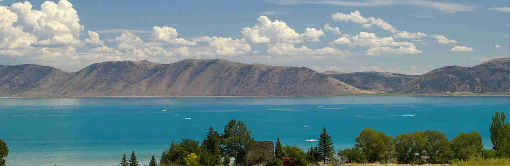

Weather Corner
Target Audience
Target Audience
The target audience of Weather Corner will be the general public of southeast Idaho, local farmers and vacationers at Bear Lake. These people will be of all ages above 18, varied gender and education levels. The mphasis will be on farmers and vacationers, since they will check the weather more often than the general public.
Personas
Jane Johnson: Occupation - Owner of Johnson’s Organic
Farm Store. Demographic and education - 53 years old with a
bachelors in horticulture. Goals/motivation for using
site - Find out when it will freeze. Watch for storms
so she can close the green houses. Watch for hot weather
so she can open the green houses. Social: Friendly demeanor,
can work on her own but loves to socialize, loves gardening
and getting her hands in the dirt. Loves to
have people visit her farm in Preston, Id. She loves to watch
her work turn into something beautiful. Technology - Old school,
uses her desktop computer for most things, other than checking
people’s produce in the farm store. Uses a landline as a home
phone and company phone. Doesn’t have a cell phone.
Ivan Maxwell: Occupation - Student at BYU-Idaho. Demographic and education -
23, working on his bachelors in construction management.
Goals/motivation for using site - Wants to make sure his
vacation weekend with his friends is fun by planning for the
weather. He wants to know what the weather will be like at
the lake this weekend. He also wants to know what are the coolest
things to do at Bear Lake. Social - He is the life of the party.
Wants to spend all his spare time with friends. He's a daredevil,
willing to try anything. He loves sports and working out.
He also loves visiting his family in Boise.
Technology - Has a smartphone that he uses for social media, web
browsing, text and phone calls. He does homework on his laptop.
Scenarios
What is the weather like at Bear lake this weekend?
- Local weather forecast link for Fish Haven, Id
- Photo of weather type for days specified
- Weather type graphic on each day of the week
What are the winter lows in southeast Idaho?
- Link to yearly average weather in southeast Idaho
What can I do at Bear Lake, Id?
- Link to Bear Lake website for list of activities available
- Link to weather for Fish Haven, Id
What is the current weather at Alexander Reservoir?
- Link to today’s forecast in Soda Springs, Id
- Weather graphic of current conditions
What is the average last freeze in southeast Idaho?
- Link to yearly average weather in southeast Idaho
- Link to website with southeast Idaho crop zoning
- Link to website with list of good crops for each zone